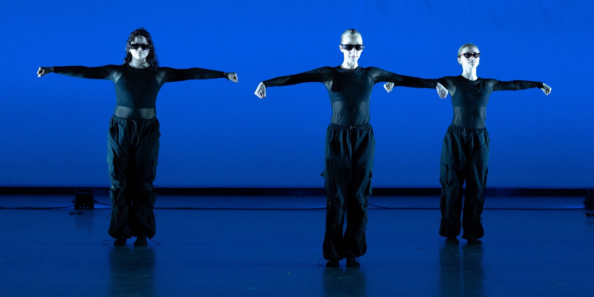
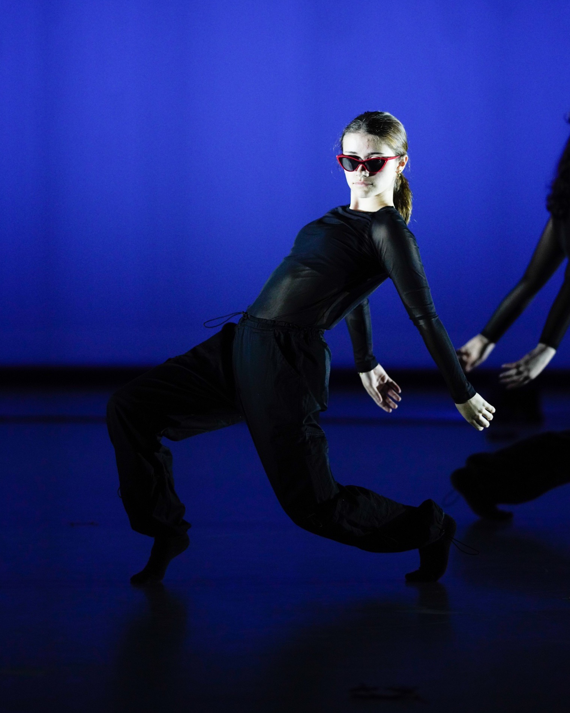
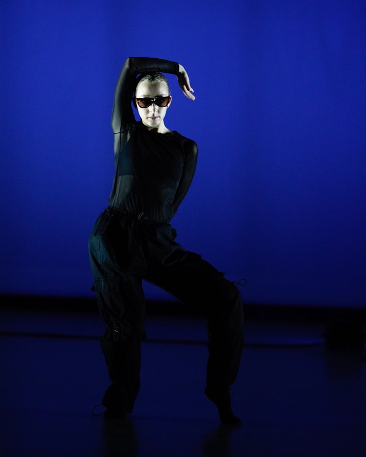
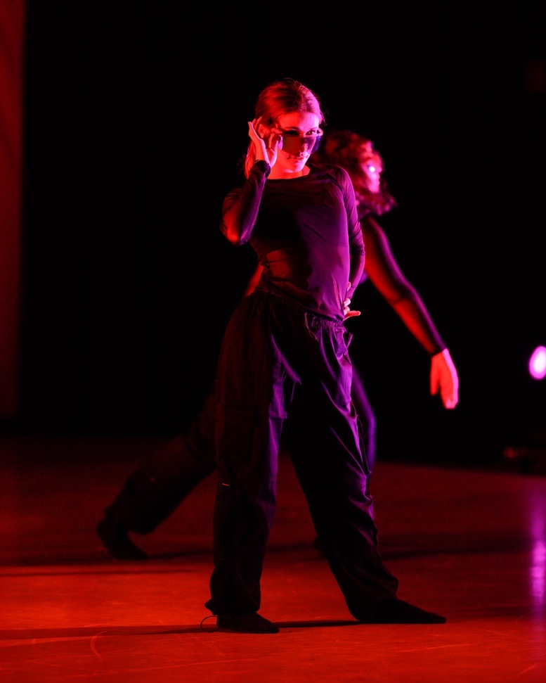
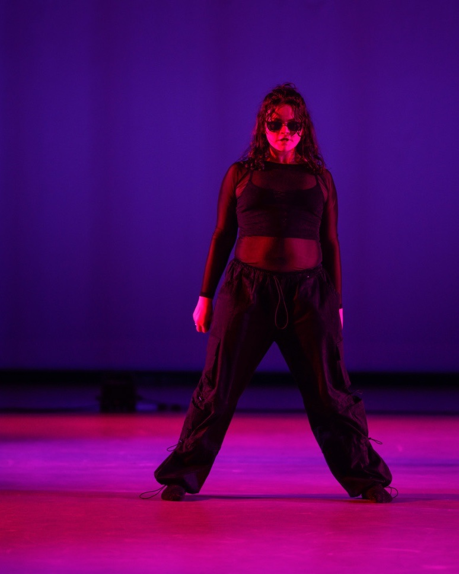

Choreography
- Choreographer
My own piece, choreographed in association with the University of Massachusetts Amherst Dance Department.
Shades
"Shades", choreographed by Carson Kelly.
Dancers: Clara Franklin, Maddy Farmer, Nicolette LeBrun. Photos by Paul Bloomfield.




